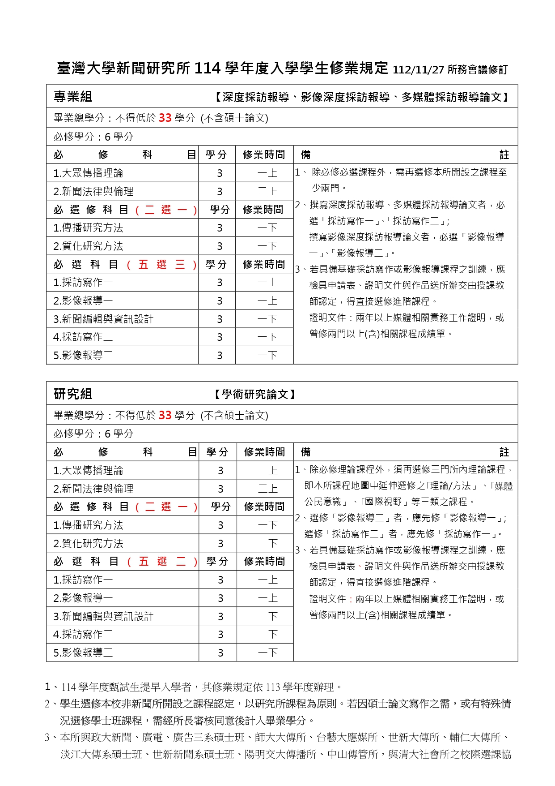

教育目標
- 培養具備新聞傳播技藝智能與倫理
- 訓練獨立思辯及尊重多元之公民意識
- 提升全球化國際視野
- 加強具備學術領域專長之新聞人才
課程架構
由於本所為獨立研究所，專任師資有限，但本所獲得校方支持，得以聘任十餘位本校各相關專業領域教師以及新聞實務經歷豐富之實務教師，廣泛結合校內、外資源，也使本所教師陣容極具特色。因此，所有教師開設之新聞基礎學養課程與專業智能課程比例，堪稱恰當，未來也將持續聘任專、兼任教師。
近年來，為使課程規劃更具系統性和前瞻性，將定期逐步檢討課程設計，並在檢討過程中，納入在學生、畢業生、兼任教師及業界專家等之建議。一方面加強理論與實務課程相關性，另一方面增進專、兼任教師之意見交流與課程合作。目前初步完成編採實務、電視製作、傳播理論、研究方法、新聞與法律等課程檢討，作為課程改進方向。
本所教師人數雖然不多，但是教師素質佳，教學和研究品質均佳，師生溝通亦甚暢通，配合各項校方的評鑑和高教中心的評鑑，本所更積極系統的檢討改善，希望提供高品質的教學，並達成本所設所的宗旨。
課程地圖
更多資訊請參考：臺大課程地圖系統
更多資訊請參考：臺大課程地圖系統
課表與課程大綱
查詢本所開設課程的詳細資訊，包含課程時間、授課教師及課程大綱。
修業規定
本所碩士班修業相關規定，包含學分要求、畢業條件等資訊。
114學年度入學學生修業規定

113學年度入學學生修業規定

112學年度入學學生修業規定

111學年度入學學生修業規定

學位考試資訊
臺灣大學新聞研究所碩士班學位考試相關規定、流程與表單下載。
學位考試辦法
論文封面範本
申請表單
論文計畫大綱表單
- 學術研究論文 - 題目及計畫大綱 Word PDF
- 多媒體深度報導論文 - 題目及計畫大綱 Word PDF
- 影像深度報導論文 - 題目及計畫大綱 Word PDF
- 深度報導論文 - 題目及計畫大綱 Word PDF
論文寫作規定
其他相關表單
校際與跨系選課
本所與多所大學傳播相關系所簽訂校際選課協議，研究生可跨校選修課程。
簽訂校際選課協議系所合作一覽表
| 合作單位 | 合作項目 | 執行期間 |
|---|---|---|
| 國立政治大學 新聞系碩士班 | 校際選課合作協議 - 研究生交換選課 | 90學年度第2學期起 |
| 國立政治大學 廣告系碩士班 | 校際選課合作協議 - 研究生交換選課 | 90學年度第2學期起 |
| 國立政治大學 廣播電視學系碩士班 | 校際選課合作協議 - 研究生交換選課 | 90學年度第2學期起 |
| 國立台灣藝術大學 應用媒體藝術研究所 | 校際選課合作協議 - 研究生交換選課 | 90學年度第2學期起 |
| 私立輔仁大學 大眾傳播學研究所 | 校際選課合作協議 - 研究生交換選課 | 94學年度第2學期起 |
| 私立世新大學 傳播研究所 | 校際選課合作協議 - 研究生交換選課 | 94學年度第2學期起 |
| 私立淡江大學 大眾傳播系碩士班 | 校際選課合作協議 - 研究生交換選課 | 94學年度第2學期起 |
| 私立世新大學 新聞系碩士班 | 校際選課合作協議 - 研究生交換選課 | 96學年度第2學期起 |
| 國立交通大學 傳播研究所 | 校際選課合作協議 - 研究生交換選課 | 98學年度第2學期起 |
| 國立清華大學 社會學研究所 | 校際選課合作協議 - 研究生交換選課 | 111學年度第2學期起 |
注意事項
校際選課相關辦法與申請流程，請洽本所辦公室或參考臺大教務處選課相關規定。
校際選課相關辦法與申請流程，請洽本所辦公室或參考臺大教務處選課相關規定。
獎學金與補助
本校提供多項獎學金與助學金資訊，協助學生安心就學。